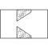

sharpEdgedOrificeReturn pressure loss data for sharp edged orifice (for both flow directions) |

|
This information is part of the Modelica Standard Library maintained by the Modelica Association.
Loss factor for mass flow rate from port_a to port_b (Idelchik 1994, diagram 4-14, p. 221):
zeta = [(1-A0/A1) + 0.707*(1-A0/A1)^0.375]^2*(A1/A0)^2
for Re(A0) ≥ 1e5, independent of alpha
Loss factor for mass flow rate from port_b to port_a (Idelchik 1994, diagram 4-13, p. 220, with A2=A1):
zeta = k*(1 - A0/A1)^0.75 + (1 - A0/A1)^2 + 2*sqrt(k*(1-A0/A1)^0.375) + (1- A0/A1)
k = 0.13 + 0.34*10^(-(3.4*LD+88.4*LD^2.3))
(there is a typing error in the formula in diagram 4-13, the above
equation corresponds to table (a) in diagram 4-12)
LD = L/D0
for Re(A0) ≥ 1e4, 40 deg ≤ alpha ≤ 60 deg
for other values of alpha, k is given as table
in diagram 3-7 (this is not yet included in the function)
| data |
Type: LossFactorData Description: Pressure loss factors for both flow directions |
|---|